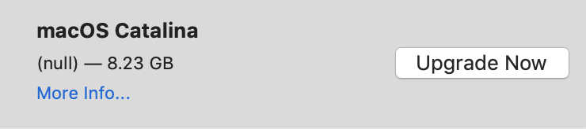

  	<div class="flex-wrap">
      
  	  <article class="tweet  " id="main">
  	    <p class="full_text">
  	      As a Rubyist, I prefer my OS updates to be version nil <div class="gallery"><ul><li><a href="../../tweets_media/1248193235744198656-EVJ5EDuUMAAgbKi.png"></a></li></ul></div>
  	    </p>
  	    <p class="created_at">
  	      4/9/2020, 3:17:12 AM
  	    </p>
  	    <p class="favorite_count">Favs: 12</p>
  	    <p class="retweet_count">Retweets: 0</p>
  	    <a class="permalink" href="../1248193235744198656">link</a>
  	  </article>

  	</div>
  </div>
